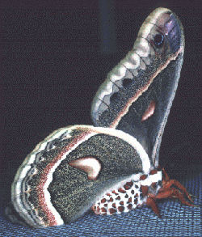

Richard B. Dominick Moth and Butterfly Collection
University of South Carolina, Columbia.
<<- Hyalophora cecropia, a wild silk moth common to North America
Some other moths worth considerably more than their body mass include:
Antheraea polyphemus;
Actius luna;
Automeris zephyria;
Manduca sexta.
This collection consists of over 26,000 individuals representing >1,100 species. The strengths of this collection are that it is a fairly in depth collection of moths and butterflies that existed in the McClellenville area during the years of the collection, around 1970. Most of the species were collected on the Dominick property, The Wedge, originally a rice plantation on the South Santee River, about 1 mile east of Coast Highway 17. Dominick was a collector of extraordinary expertise.
The Dominick Catalog
Escapes:
Dept. Biological Sciences, or
USC College of Arts and Sciences, or
USC
The moths were collected by Dr. Richard B. Dominick at
his home on The Wedge Plantation, (on the South Santee River near McClellanville,
South Carolina) from around 1965-1975. The collection was moved from The Wedge
Plantation to the Columbia Campus of the University of South Carolina in March,
1993. It is currently a University of South Carolina McKissick Museum Collection,
and is housed in the Department of Biological Science under the charge of its
curator.
The collection includes information of catch times (time of day,
month and year) and method of collection (reared, light trap, bait, etc); host
plant information is preserved with certain species, as are life stage forms
(freeze dried larvae and pupae). The collection is fully catalogued.
The collection is available for research use; however, we are not able at this
time to make loan of any specimens.
This site is maintained by
Dr. Richard G. Vogt. For information regarding the collection, please contact him at vogt@biol.sc.edu
The catalog information was compiled by Dr. F. Lance Wallace of The Citadel, Charleston SC.
[This document last modified
]
In accordance with USC Policy ACAF 7.04
the following information is included:
Department: Biological Sciences;
Maintainer: Richard Vogt vogt@biol.sc.edu
Copyright 1998
by the Board of Trustees of the
University of South Carolina.
This is
<URL:http://zebra.biol.sc.edu/moth.html>
last modified 18 February 1998